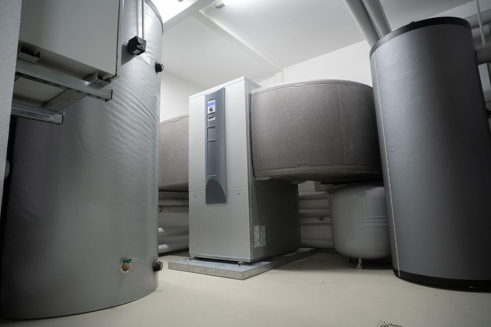

A cold tap costs a business far more than it costs a household. A kitchen cannot sanitize or run its dish line, a laundromat's machines sit idle, salon clients wait with wet hair, and apartment tenants start filling the voicemail before seven in the morning. Gyms feel it the moment a class lets out. The equipment is designed for exactly those rushes: high-input gas tanks, multi-element electric units, racks of tankless heaters, or a boiler feeding a storage tank, often tied to a recirculation loop so hot water waits at the tap. Across Yakima, WA, we service all of those setups with one priority in mind: getting you back to business.
Our approach to commercial systems starts with numbers. We study how much hot water your operation draws during its busiest hour and how quickly the equipment has to recover, then match gas input, element capacity, and storage to that load. Our technicians work on high-recovery tanks, multi-unit and manifolded tankless systems, commercial electric heaters, and boiler-fed indirect tanks. We service the recirculation side as well: pumps, timers, check valves, and balancing so the far fixtures do not wait. Where storage runs at 140 degrees or more for sanitation, master or point-of-use mixing valves bring delivery temperatures down to safe levels, and we test them, since a failed mixing valve can either scald or shortchange every tap.
We plan around your hours, not ours. Replacements are arranged before opening, after closing, or on the slowest day of your week, and where the system has more than one heater, we keep at least one running while the other is serviced. There is usually more paperwork on a commercial job, and we handle the coordination: permits and inspections, verifying gas supply and vent sizing, and meeting code requirements for larger equipment. For commercial water heater service in Yakima that respects your operating hours, call (509) 509-3390.
What homeowners call us about most is Water Heater Installation in Yakima and Water Heater Replacement in Yakima. Start there if you're not sure what you need.

Warning Signs to Watch For
Catching a symptom early is often the difference between a quick part swap and a tank that gives out on the garage floor. These are the red flags our technicians see most often before a breakdown:
- Energy costs climbing while usage stays flat
- Loud sediment noise from equipment that runs all day
- Rust-colored water, leaks at fittings, or moisture under the heater
- Dish or hand sink temperatures drifting below what your inspector expects
- Lukewarm water at the exact time you need the most
- A heater old enough that a failure feels like a matter of time
- Fixtures that run too hot one minute and cool the next
- A recirculation loop that no longer seems to do its job
Small Symptoms, Big Consequences
Left alone, even minor symptoms like rumbling or temperatures that swing from hot to warm tend to mean the heater is working its way toward a breakdown. Call Yakima Water Heater at (509) 509-3390 at the first sign of trouble.
Water Heater Trouble? Call Us.
Call Yakima Water Heater for fast, reliable service.
Tap to Call (509) 509-3390What Homeowners Ask Us Most
Why Professional Commercial Water Heaters Matters
A commercial heater is not just a large residential one. Higher gas input means the supply line, meter, combustion air, and vent all have to be sized for the load. Heavy electric units can strain a panel that was never meant to carry them. Storage temperatures of 140 degrees or more help with sanitation but create scald risk, so properly sized mixing valves are essential. And a recirculation system only works when the pump, check valves, and balancing valves are all doing their part; otherwise, the far end of the building waits while the near end runs hot.
Code compliance and scheduling matter just as much. Permits and inspections are standard for commercial work, larger tanks may carry extra requirements, and any delay at inspection can keep a kitchen or laundromat closed. Yakima Water Heater handles that coordination up front, plans installations for early mornings, evenings, or closed days, and replaces banked units one at a time whenever the layout allows. The result is a system sized for your peak, installed correctly, and brought online with as little disruption to your customers as possible.
Step by Step: How a Visit Works
We follow the same careful process on every water heater, whether it's a quick thermostat swap or a full tankless conversion. Here's what you can expect when you choose Yakima Water Heater:
Usage Analysis
Before recommending anything, we measure what your operation draws during its rush and how quickly the heaters must bounce back.
Equipment Plan
We spell out the input, storage, and configuration, including multi-unit or manifolded setups that keep part of the system online during service.
Work Around Your Hours
Installation is timed for the hours you are closed or quiet, with staged swaps on multi-unit systems to keep hot water available.
Testing and Upkeep
Every system is tested under load before we leave, and you get a maintenance plan to keep it that way.
Want a Professional Opinion?
Call Yakima Water Heater to talk through your situation with an experienced technician.
Call (509) 509-3390 TodayTips to Keep Your Water Heater Healthy
A few simple habits, like an annual flush and a quick look at the relief valve, can add years to a tank. Here's where to begin:
- Test thermostatic mixing valves periodically to confirm safe delivery temperatures
- Keep the area around the heaters clear for combustion air and service access
- Check anodes on a schedule matched to your volume and water quality
- Flush high-demand heaters on a regular interval to keep recovery strong
- Schedule upgrades during slow periods instead of waiting for a breakdown
- Log water temperatures at key fixtures so drift is caught early
- Listen for a failing recirculation pump and have check valves inspected
Doing It Yourself vs. Hiring a Technician
Some simple checks are fine to do yourself, but most water heater repairs benefit from professional tools, training, and experience. Consider the following comparison:
| Factor | Doing It Yourself | Professional Service |
|---|---|---|
| Sizing | Guess based on tank size | Matched to real usage |
| Combustion Air | Meter size never considered | Capacity confirmed before install |
| Sanitation Temperature | Delivery temperatures left to chance | Safe delivery temperatures at every fixture |
| Hot Water Delivery | Long waits at distant sinks | Fast hot water at every fixture |
| Code Compliance | Code items overlooked | Permits and inspections coordinated |
| Downtime | Business closed while the job drags on | Minimal disruption to customers |
Let's Get Your Hot Water Back
Get your hot water back before a small fault turns into a flooded floor. Yakima Water Heater is ready to respond fast.
Tap to Call (509) 509-3390Commercial Water Heaters Near Yakima
Our service area reaches well past the city limits. Choose your community for local details.